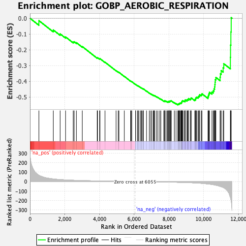
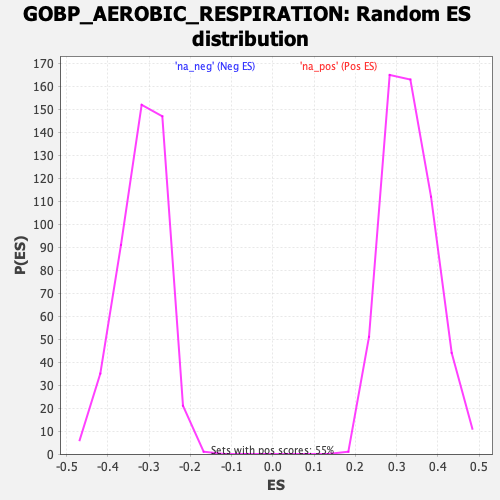

| | | Dataset | DE_genes |
| Phenotype | NoPhenotypeAvailable |
| Upregulated in class | na_neg |
| GeneSet | GOBP_AEROBIC_RESPIRATION |
| Enrichment Score (ES) | -0.5499741 |
| Normalized Enrichment Score (NES) | -1.7341999 |
| Nominal p-value | 0.0 |
| FDR q-value | 0.1310769 |
| FWER p-Value | 0.951 |
Table: GSEA Results Summary

Fig 1: Enrichment plot: GOBP_AEROBIC_RESPIRATION
Profile of the Running ES Score & Positions of GeneSet Members on the Rank Ordered List
| SYMBOL | RANK IN GENE LIST | RANK METRIC SCORE | RUNNING ES | CORE ENRICHMENT | | 1 | SNCA | 512 | 66.787 | -0.0149 | No |
| 2 | NDUFAF1 | 1341 | 27.942 | -0.0743 | No |
| 3 | OXA1L | 1736 | 21.007 | -0.0992 | No |
| 4 | NIPSNAP2 | 2049 | 17.519 | -0.1186 | No |
| 5 | SDHA | 2490 | 13.771 | -0.1506 | No |
| 6 | NOP53 | 2542 | 13.278 | -0.1492 | No |
| 7 | ATPSCKMT | 2673 | 12.529 | -0.1549 | No |
| 8 | NDUFS4 | 3011 | 10.310 | -0.1796 | No |
| 9 | NDUFB4 | 3871 | 6.762 | -0.2512 | No |
| 10 | SHMT2 | 3890 | 6.709 | -0.2498 | No |
| 11 | DLST | 4012 | 6.324 | -0.2575 | No |
| 12 | HIF1A | 4029 | 6.273 | -0.2561 | No |
| 13 | CAT | 4321 | 5.481 | -0.2789 | No |
| 14 | UQCRH | 4958 | 3.941 | -0.3324 | No |
| 15 | SIRT3 | 5080 | 3.677 | -0.3412 | No |
| 16 | UCN | 5126 | 3.598 | -0.3435 | No |
| 17 | TAFAZZIN | 5433 | 3.061 | -0.3688 | No |
| 18 | IREB2 | 5798 | 2.514 | -0.3992 | No |
| 19 | MDH1B | 5821 | 2.486 | -0.4000 | No |
| 20 | NDUFS2 | 5865 | 2.429 | -0.4027 | No |
| 21 | UQCRC2 | 6083 | -2.226 | -0.4205 | No |
| 22 | BLOC1S1 | 6087 | -2.236 | -0.4198 | No |
| 23 | NDUFS5 | 6203 | -2.416 | -0.4287 | No |
| 24 | NDUFS6 | 6227 | -2.457 | -0.4296 | No |
| 25 | SLC25A14 | 6275 | -2.536 | -0.4326 | No |
| 26 | UQCRFS1P1 | 6370 | -2.673 | -0.4396 | No |
| 27 | NDUFC2 | 6419 | -2.752 | -0.4425 | No |
| 28 | NDUFA6 | 6462 | -2.816 | -0.4449 | No |
| 29 | NDUFS7 | 6523 | -2.910 | -0.4488 | No |
| 30 | VCP | 6536 | -2.946 | -0.4486 | No |
| 31 | COX4I1 | 6713 | -3.243 | -0.4624 | No |
| 32 | NDUFV2 | 6872 | -3.511 | -0.4746 | No |
| 33 | RHOA | 6950 | -3.639 | -0.4796 | No |
| 34 | ADSL | 7016 | -3.774 | -0.4836 | No |
| 35 | SURF1 | 7099 | -3.914 | -0.4890 | No |
| 36 | NDUFS1 | 7125 | -3.955 | -0.4894 | No |
| 37 | MTFR2 | 7172 | -4.030 | -0.4916 | No |
| 38 | NDUFA9 | 7191 | -4.066 | -0.4914 | No |
| 39 | MDH1 | 7296 | -4.283 | -0.4985 | No |
| 40 | ATP5F1D | 7372 | -4.451 | -0.5030 | No |
| 41 | SUCLG2 | 7478 | -4.686 | -0.5101 | No |
| 42 | NNT | 7538 | -4.837 | -0.5131 | No |
| 43 | SLC25A33 | 7705 | -5.282 | -0.5251 | No |
| 44 | UQCC3 | 7754 | -5.420 | -0.5269 | No |
| 45 | ARL2 | 7758 | -5.432 | -0.5247 | No |
| 46 | NDUFB3 | 7771 | -5.457 | -0.5234 | No |
| 47 | DLD | 7848 | -5.649 | -0.5275 | No |
| 48 | IDH2 | 7919 | -5.861 | -0.5309 | No |
| 49 | COX7C | 7957 | -5.988 | -0.5315 | No |
| 50 | NDUFA2 | 7963 | -6.003 | -0.5293 | No |
| 51 | ATP5F1C | 7977 | -6.050 | -0.5277 | No |
| 52 | NDUFB5 | 8037 | -6.246 | -0.5301 | No |
| 53 | COX10 | 8046 | -6.275 | -0.5280 | No |
| 54 | NDUFB9 | 8054 | -6.300 | -0.5258 | No |
| 55 | NDUFA5 | 8083 | -6.418 | -0.5254 | No |
| 56 | CCNB1 | 8107 | -6.502 | -0.5245 | No |
| 57 | PARK7 | 8139 | -6.612 | -0.5243 | No |
| 58 | NDUFB1 | 8314 | -7.170 | -0.5362 | No |
| 59 | UQCR10 | 8412 | -7.518 | -0.5413 | No |
| 60 | PDHB | 8513 | -8.048 | -0.5464 | Yes |
| 61 | ATP5MF | 8540 | -8.177 | -0.5450 | Yes |
| 62 | UQCRC1 | 8577 | -8.348 | -0.5445 | Yes |
| 63 | FH | 8589 | -8.423 | -0.5417 | Yes |
| 64 | ATP7A | 8623 | -8.547 | -0.5408 | Yes |
| 65 | SDHC | 8641 | -8.618 | -0.5384 | Yes |
| 66 | PDE12 | 8683 | -8.806 | -0.5381 | Yes |
| 67 | SDHAF2 | 8720 | -8.946 | -0.5372 | Yes |
| 68 | SUCLA2 | 8736 | -9.035 | -0.5345 | Yes |
| 69 | NDUFC1 | 8740 | -9.047 | -0.5308 | Yes |
| 70 | ATP5MG | 8754 | -9.097 | -0.5279 | Yes |
| 71 | NDUFAB1 | 8768 | -9.171 | -0.5250 | Yes |
| 72 | COX7A1 | 8798 | -9.278 | -0.5234 | Yes |
| 73 | FXN | 8874 | -9.722 | -0.5256 | Yes |
| 74 | NDUFA4 | 8934 | -10.133 | -0.5262 | Yes |
| 75 | ATP5PB | 8935 | -10.134 | -0.5217 | Yes |
| 76 | NDUFB8 | 8946 | -10.231 | -0.5181 | Yes |
| 77 | CYC1 | 9047 | -10.884 | -0.5219 | Yes |
| 78 | IDE | 9051 | -10.894 | -0.5173 | Yes |
| 79 | COX5A | 9087 | -11.166 | -0.5154 | Yes |
| 80 | NDUFA3 | 9140 | -11.554 | -0.5148 | Yes |
| 81 | NDUFA1 | 9141 | -11.557 | -0.5097 | Yes |
| 82 | MYC | 9243 | -12.241 | -0.5131 | Yes |
| 83 | NDUFS8 | 9269 | -12.383 | -0.5097 | Yes |
| 84 | NDUFV3 | 9289 | -12.528 | -0.5058 | Yes |
| 85 | PPIF | 9493 | -14.202 | -0.5172 | Yes |
| 86 | SDHB | 9535 | -14.479 | -0.5143 | Yes |
| 87 | NDUFA8 | 9547 | -14.641 | -0.5088 | Yes |
| 88 | COX6A1 | 9562 | -14.802 | -0.5034 | Yes |
| 89 | ME3 | 9607 | -15.239 | -0.5005 | Yes |
| 90 | CS | 9689 | -16.075 | -0.5004 | Yes |
| 91 | TNF | 9713 | -16.486 | -0.4951 | Yes |
| 92 | UQCC2 | 9763 | -17.079 | -0.4918 | Yes |
| 93 | DNAJC30 | 9774 | -17.190 | -0.4851 | Yes |
| 94 | COX15 | 9868 | -18.750 | -0.4848 | Yes |
| 95 | NDUFA7 | 9907 | -19.579 | -0.4794 | Yes |
| 96 | COX7A2 | 10255 | -25.730 | -0.4982 | Yes |
| 97 | ABCD1 | 10283 | -26.229 | -0.4889 | Yes |
| 98 | CHCHD10 | 10306 | -26.759 | -0.4789 | Yes |
| 99 | NDUFS3 | 10339 | -27.461 | -0.4696 | Yes |
| 100 | IDH3A | 10483 | -30.821 | -0.4683 | Yes |
| 101 | ATP5F1B | 10558 | -33.116 | -0.4601 | Yes |
| 102 | CYCS | 10602 | -34.585 | -0.4485 | Yes |
| 103 | DNAJC15 | 10636 | -35.640 | -0.4356 | Yes |
| 104 | MDH2 | 10653 | -36.219 | -0.4209 | Yes |
| 105 | UQCRFS1 | 10663 | -36.605 | -0.4055 | Yes |
| 106 | BNIP3 | 10675 | -37.316 | -0.3899 | Yes |
| 107 | UQCRQ | 10710 | -38.839 | -0.3756 | Yes |
| 108 | GHITM | 10951 | -50.852 | -0.3739 | Yes |
| 109 | MRPS36 | 10969 | -51.809 | -0.3525 | Yes |
| 110 | ACO1 | 11018 | -54.699 | -0.3324 | Yes |
| 111 | AK4 | 11130 | -61.925 | -0.3146 | Yes |
| 112 | ACO2 | 11164 | -65.325 | -0.2885 | Yes |
| 113 | PINK1 | 11544 | -165.799 | -0.2480 | Yes |
| 114 | DLAT | 11554 | -177.589 | -0.1701 | Yes |
| 115 | SDHD | 11573 | -191.828 | -0.0867 | Yes |
| 116 | SLC25A23 | 11591 | -207.791 | 0.0039 | Yes |
Table: GSEA details [plain text format]

Fig 2: GOBP_AEROBIC_RESPIRATION: Random ES distribution
Gene set null distribution of ES for GOBP_AEROBIC_RESPIRATION